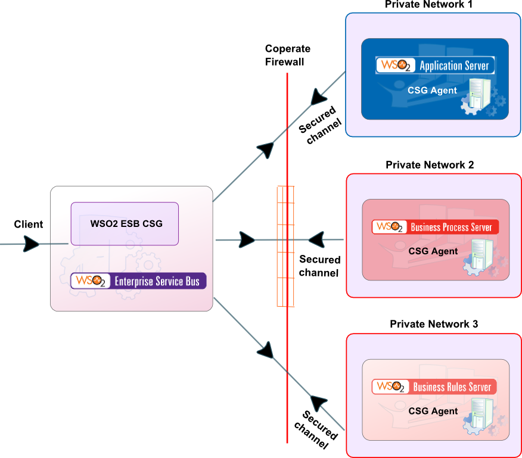
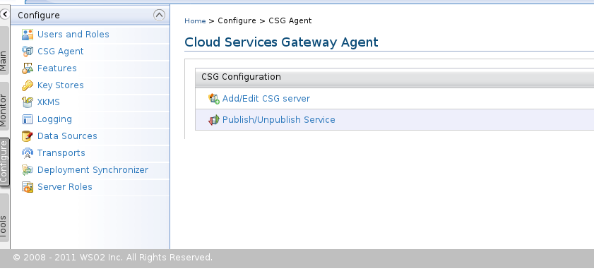
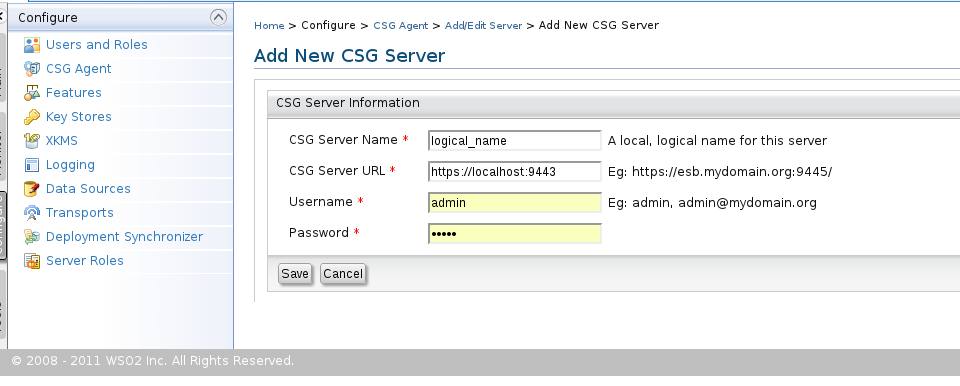
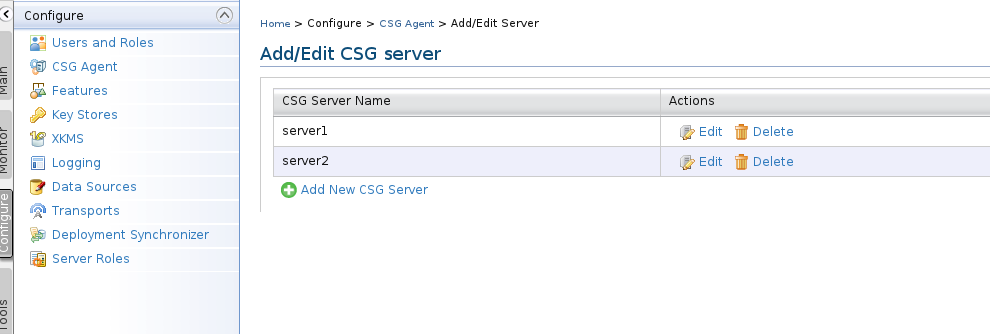
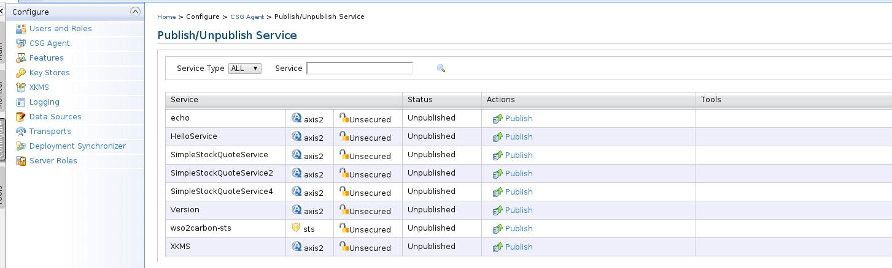
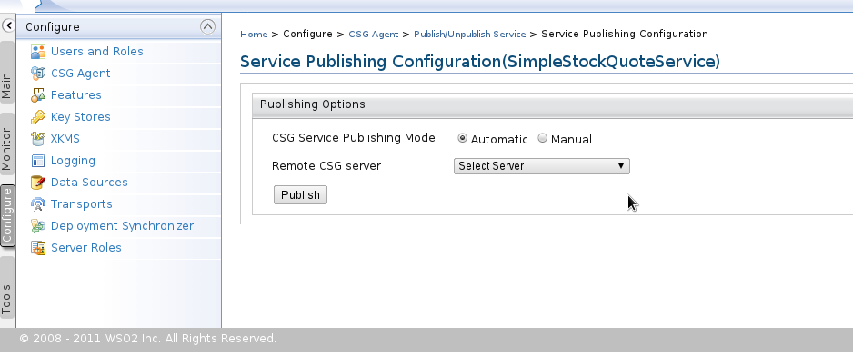
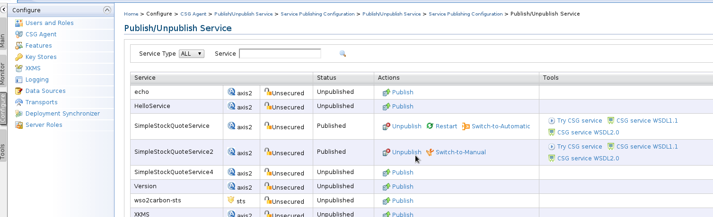

This is the user guide for Cloud Services GateWay. If you read this document that means you have successfully installed the CSG Agent component. Cloud Services GateWay(CSG) is consist of two parts.
Most of the corporate networks in today's world are secured with corporate firewalls. There are services deployed in the private network that can only access within the organization. If you want to access one of these services from your home, you'll not be able to do that because of the firewall. In such time CSG can come to rescue you.
When a private service is published a public proxy will be deployed on CSG server which acts as the front end for the private service. This minimal proxy has a very specific feature. The proxy will have an endpoint on a server(which is based on Apache Thrift) which holds the incoming messages. In turns the private service (when published) starts to poll the endpoint on the Thrift server. This queue is used the as the communication medium for the front end proxy and the back end private service. The server that holds message on behalf of the private service is bundle into the CSG server.
The technique that we have used to publish a private to public is very simple. When you are within the firewall you can access the outside but not from outside to inside. When you publish a private service that service will act as the client and will always make the connection to internet from inside the corporate firewall. Since the firewall allows connection from inside to outside we'll not face any problem publishing services and using them outside. Once published, a proxy service will be deployed on ESB which you can use as the public service. At runtime messages will flow in the same path.
The deploying proxy will have the same name as the private service.
When deploying CSG the private services which will be hosted on one of the service hosting products (such as AS, BPS, BRS, MS etc..) and will be deployed behind the corporate firewall. The CSG server will be deployed in a place where publicly accessible.

Figure 1: The deployment diagram for CSG deployment.
CSG can be used to expose a private service to public through a corporate firewall.
CSG server has a default user, 'csguser' (without quotes) which can be used to publish a service. 'csguser'(with password csguser, see CSG server documentation to see how to change the password) can be used instead of the admin user with all permissions.
To add a new CSG server just login into one of the service hosing servers( from this point onwards WSO2 Application Server-AS, will be used) you can add a new CSG server by using the CSG Agent link from the left menu of the console under Configure section. This will forward you to the UI to add new CSG server or publish a service wizard.

Figure 2: Add server or publish a service
Select the Add/Edit CSG server option to add a new CSG server. This will display the new CSG server add wizard.

Figure 3: Add/Edit server
Each of the field has the following meaning. Note that all these fields are mandatory except Domain Name field.
Once this server is added it'll list under the CSG server listing page. This wizard can be use to edit the already added servers or to remove any servers.

Figure 4: List of added servers
Once a server is added you can publish the already deployed services to those servers. Go to home page of CSG Agent and follow the link "Publish/Unpublish service". This will bring you to the service publishing wizard.

Figure 5: Publish service
Select the service that you want to publish and click on Publish link. This will you to the service publishing option wizard.

Figure 6: Select publishing options.
From the wizard you can select the mode and the server that you want to publish this service. The drop down menu will list added CSG serves set. When selecting the mode either you can use automatic or manual. A public proxy service that was added using the automatic method will respond to its private service changes (service deleted) and manual mode will not aware of any changes in private service changes. The default mode is automatic.
Once the service is published it's additional actions will be listed. An already published service can either Unpublish, Restart, Switch-To-Automatic(if manual mode was selected) or Switch-To-Manual(if automatic mode was selected). Also note that the Restart option is only available in manual mode because in automatic mode that is handle automatically.
Once the private service is published, a use can view or try the CSG service WSDL or using the try it tool.

Figure 6: Other publishing options.
An unpublished service can be published again if required.
Upon publishing a service it'll start to poll the remote CSG server's message store infrastructure queue for any request messages. As you may aware CSG server uses Apache Thrift based server implementation for storing any request messages. Since CSG Agent side requires to access this Thrift based server the firewall has to enable for this server port(by default which runs on port 15001).